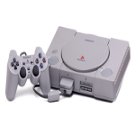
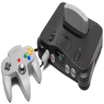
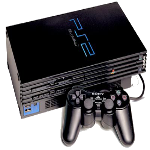
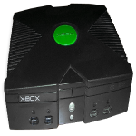
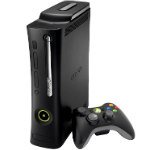
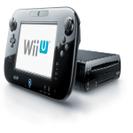

Playstation was the first console to be released in the modern era. The first Playstation Console also known as PS One really set the stage for the consoles to follow. This console was sold around 100 million systems around the world. The biggest downfall to the system was having to use memory cards to save your progress in games. Keeping track of these things was a challenge.

Modern Console Evolution
1995
Playstation
1996
N64
The N64 was the last in home gaming console that used cartridged games. It got its name from being produced by Nintendo and having a 64-bit processing unit.
2000
Playstation 2
The Playstation 2 is the second installment of the Playstation series. This system was slightly better than the PS one. The PS 2 offered backwards compatability with PS one games and introduced the dual shock controller, which gave vibration feedback.
2001
Xbox
Microsoft released the Xbox in 2001. The console allowed up to 4 players to play on one console at a time something that had only been implemented by Nintendo with the N64 until its release. Halo which was the xbox's biggest game really set of its popularity. Xbox was the first to include a HDD to allow gamers to save their progress with out a external device.
2005
Xbox 360
The Xbox 360 was the next installment of the from Microsoft. Being released 4 years later this system was significantly better than the first installment Xbox. This version introduced Xbox live, which allowed gamers to play online vs each other. Along with online mutiplayer Xbox live allowed players to download extra content for the games they bought via the market place. The Xbox 360 came with a redesigned wireless controller, which made it a lot more comfortable to play.
2006
Playstation 3
The Playstation 3 was the 3rd installment from Sony. This console originally offered backwards compatability with PS2. However, Sony eventually discontinued the ability in future consoles. The Playstation 3 offered massive storage capabilities and a Bluray disk drive. The Bluray disk drive allowed gamers to use their system as a means to watch Bluray movie. Another controller was introduced called the six axis. This controller allowed gamers to move by tilting the controller.
Nintendo Wii
The Wii was Nintendos attempt at keeping up with Microsoft and Sony. The Wii was popular in the beggining because it introduced a new way of gaming. The gamer controlled the movement of the game by swinging their controller around to mimick on screen activity. The downfall of this system was that the games were directed to kids and family play. Kudos to Nintendo for doing so. However, hardcore gamers tend to like to play alone.
2012
Wii U
The Wii U was the first 8th generation gaming console. Which is a very cool alcolade to hold. Among that the Wii U was the first Nintendo console to support HD gaming. The Gaming system introduced a new controller design that allowed you to see the game on the controller while playing. Some games even allowed the gamer to play the game on just the controller. Handy trait if your family is watching TV. The biggest downfall to this system is the same as the Wii. The system mainly targeted kids and families.